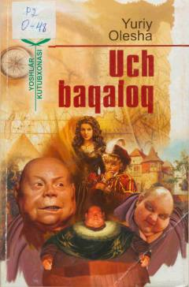

UBZulmga qarshi kurashuvchi jasur qahramonlarning qiziqarli sarguzashtlari haqidagi ertak-roman.
Ushbu asar Uch baqaloq hukmronlik qiladigan mamlakatdagi zulm va haqsizlikka qarshi kurashuvchi jasur qahramonlar haqida hikoya qiladi. Donishmand doktor Gaspar, dorboz Tibul va qurolsoz Prospero kabi qahramonlar xalqni ozodlikka olib chiqish uchun birlashadilar.